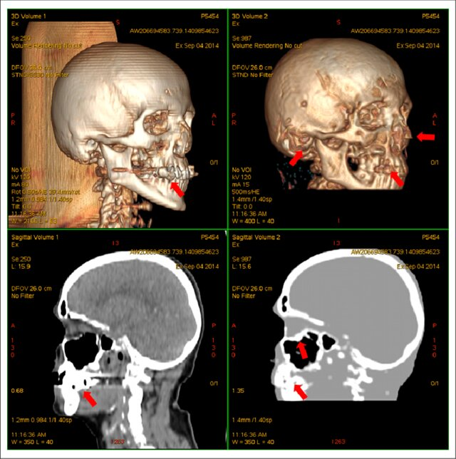
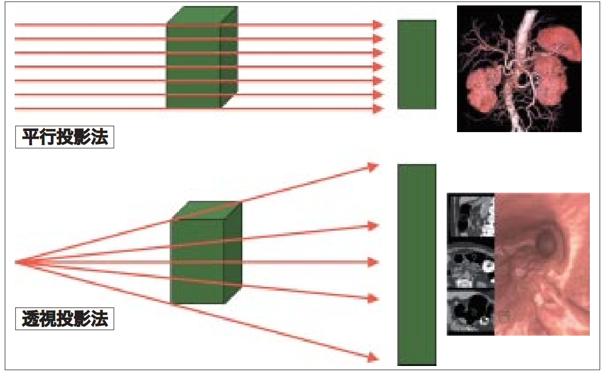
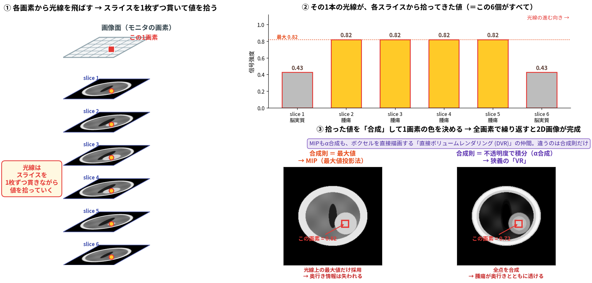
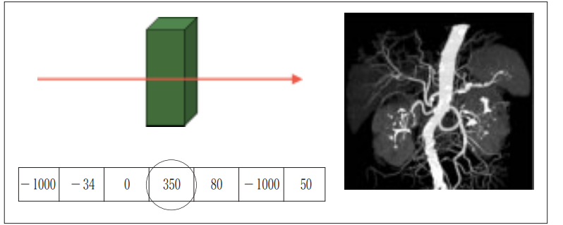
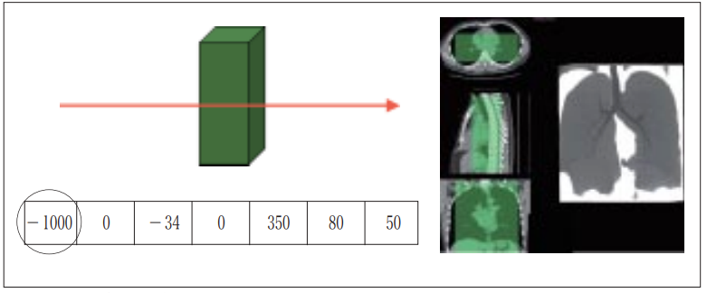
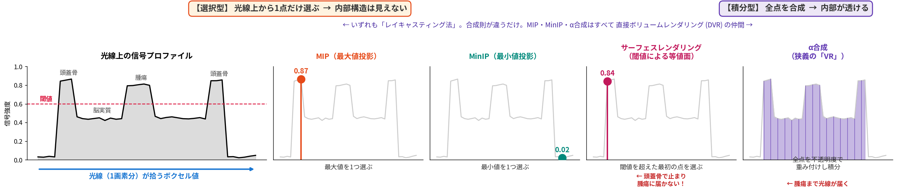
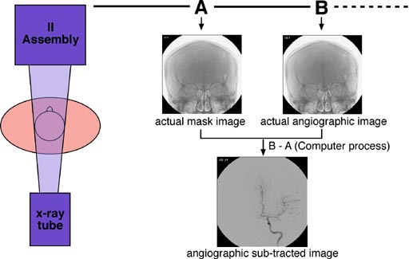

14. 画像の可視化及び手術支援としての画像活用
1. 導入：診断から治療へ - 医用画像の新たな役割
これまでの講義では、CTやMRIといった各モダリティの原理から、フィルタリング、Segmentation、Registration、AIによる解析まで、医用画像処理に関する様々な「点」の知識を学んできました。
本講義は、それらの知識が実際の臨床現場でどのように統合され、患者さんの治療に貢献しているかを手術支援の観点から紹介します。
治療におけるパラダイムシフト
かつて医用画像は、主に「診断」のための静的な情報として用いられてきました。しかし現在、その役割は大きく変化しています。
- 従来: 画像は「診断 (Diagnosis)」のための静的な情報
- 現在: 画像は「治療 (Therapy)」をナビゲートする動的なツールへ
画像処理技術の進化により、私たちはより安全で、より低侵襲な治療を実現できるようになりました。本日は、その最前線で活用されている技術を見ていきましょう。
本日のキーワード
本講義を理解するための3つのキーワードです。
-
可視化 (Visualization):
- CTやMRIで得られた2Dの断層画像を、3Dの立体像として「可視化」する技術。人間の目では直接見ることのできない体内の複雑な構造を直感的に把握します。
-
ナビゲーション (Navigation):
- カーナビが目的地まで案内するように、術前に計画した情報を術中の患者さんの身体に正確に重ね合わせ、手術器具を安全かつ正確に目標まで導く技術。
-
インターベンション (Intervention):
- 「介在」「介入」を意味し、X線や超音波などの画像をリアルタイムに見ながら、カテーテルや針を用いて行う低侵襲治療のことです。
2. 3D可視化技術
手術の成否は、術前の計画にかかっていると言っても過言ではありません。
3D可視化技術は、術者が複雑な解剖構造を正確に把握し、最適な手術計画を立案するために重要な役割を持ちます。
また、専門知識を必要とする画像読影に基づく診断結果を患者に説明する際に、その説明可能性を高める目的でも大きな意味を持ちます。
{kind=link}

2.1. 3D画像再構成のアルゴリズムと可視化技術
入力データをCTやMRIで撮影された連続断層画像、すなわちボクセルデータとして、3次元に再構成することで空間的な情報を付与できます。
3D可視化とは、結局のところ 「3次元のボクセルデータ（立体）を、2次元のモニタ（平面）にどう描くか」 という問題です。
大きく分けると、アプローチは2つしかありません。
- サーフェスレンダリング: 対象物の「表面」だけを取り出して描く
- ボリュームレンダリング: ボクセルデータを「塊」のまま直接描く
まず両者に共通する土台（投影法とレイキャスティング法）を理解し、そのうえで順に見ていきます。
2.1.1. 投影法 ― 光線をどう飛ばすか
どちらのアプローチでも、まず「画面のどこから、どの向きに光線を飛ばすか」を決める必要があります。
3次元画像表示における投影法は、以下二つに大別されます。
- 平行投影法：
- 光線がすべて平行に進む投影法で、形状が歪まないと仮定した投影
- 透視投影法：
- 光線が特定の一点から通り抜けて放射状に広がると仮定した投影。
- 仮想内視鏡などに利用
{kind=link}

2.1.2. レイキャスティング法 ― 光線が拾った値を「合成」して画素にする
3D可視化の中核となるアルゴリズムが レイキャスティング法 (Ray-Casting) です。
- 画面（スクリーン）の各画素から、視点とは反対方向に仮想的な光線（Ray）を飛ばします。
- 光線はスライスを1枚ずつ貫きながら、通過するボクセルの値を拾っていきます。
- 拾った値の列を、たった1つの色（画素値）にまとめます。これを 合成 (compositing) と呼びます。
- これを全画素について繰り返すと、2次元の画像が完成します。
{kind=link}

- 光線の飛ばし方は、どの手法でも全く同じ
- 違うのは「拾った値をどう合成するか」、その一点だけ
この「合成のしかた」を変えるだけで、まったく異なる画像が得られます。以下、順に見ていきましょう。
2.1.3. サーフェスレンダリング (Surface Rendering)
対象物の「表面」だけを抽出して描画する手法です。
考え方はシンプルです。 閾値をひとつ決め、それを境界として対象物の「内」と「外」を切り分け、その境界面（表面）を不透明に描きます。
実装には2つのルートがあります。
ルートA：ポリゴンモデルに変換してから描く
- 代表的なアルゴリズム:
Marching Cubes法- 8つのボクセルで構成される立方体（Cube）を考えます。
- 各頂点の値（例: CT値）が、設定した閾値より大きいか小さいかを判定します。
- その組み合わせパターン（2^8 = 256通り）に応じて、あらかじめ定義されたポリゴン（三角形のメッシュ）を立方体内に配置（Marching）します。
- これを全ボクセル領域で繰り返すことで、対象物全体の表面を表現するポリゴンモデルが生成されます。
-
ボクセルデータを一度ポリゴン（幾何モデル）に変換するのが特徴です。変換してしまえば、あとはGPUが得意とする三角形の描画になるため高速で、3DプリンタのSTLデータもこの形式です。 ルートB：光線を閾値で打ち切る
-
ポリゴンを作らず、レイキャスティングで光線が最初に閾値を超えた位置を、そのまま表面とみなして陰影をつけます。
-
つまり、合成のしかたを「最初に閾値を超えた1点で打ち切る」にしただけです。（演習ではこちらを実装します） 特徴（両ルート共通）
-
長所: 臓器の形状把握に優れ、データ量が比較的小さいため高速に描画できます。
- 短所: 表面しか描画しないため、内部の構造がわかりません。閾値の設定一つで結果が大きく変わってしまいます。
- 臨床応用: 骨の3Dモデル作成、顔面骨の形状評価、3Dプリンタで出力するためのSTLデータ作成など。
なぜ内部が見えないのか？ 光線が最初に当たった表面で止まってしまうからです。 たとえば頭部を描くと、光線は頭蓋骨で止まってしまい、その奥にある脳や腫瘍には到達しません。 「表面しか描画しないため内部の構造がわからない」という短所は、 合成のしかたが「1点で打ち切る」ものである以上、必然的にそうなるのです。
2.1.4. ボリュームレンダリング (Volume Rendering)
ボクセルデータ全体を「塊」として扱い、ポリゴンに変換せず、ボクセルのまま直接描画する手法です。 直接ボリュームレンダリング (DVR: Direct Volume Rendering) とも呼ばれます。
サーフェスレンダリングとは違い、光線は途中で打ち切られず、ボリュームを最後まで通り抜けます。 そして、通り抜けながら拾った値をどう合成するかによって、いくつもの手法に枝分かれします。
(1) 最大値投影法 (Maximum Intensity Projection, MIP)
視線上で最も高い画素値を持つボクセルの値を採用します。造影された血管や石灰化、結石などの描出に非常に有効です。
{kind=link}

(2) 最小値投影法 (Minimum Intensity Projection, MinIP)
視線上で最も低い画素値を持つボクセルの値を採用します。空気を含んだ気管・気管支や、低吸収値を示す胆管などの描出に用いられます。
{kind=link}

上の2つの図を見比べてください。 光線が拾ってきた値の列は、どちらも (−1000, −34, 0, 350, 80, −1000, 50) で全く同じです。 違うのは、そこから 350（最大値）を選ぶか、−1000（最小値）を選ぶかだけ。 それだけで、造影血管の画像（MIP）にも、含気腔の画像（MinIP）にもなります。
(3) 加算平均法 (RaySum)
視線上のすべての値を足し合わせる（平均する）方法です。X線が体を透過して撮影される単純X線写真に似た画像（DRR: X線透視様画像）が得られます。
(4) α合成 ― 狭義の「ボリュームレンダリング」
視線上のすべてのボクセルに、色と不透明度（透明度）を与えて足し合わせていく方法です。 各ボクセルに透明度を設定することで、物体の内部も表示可能になります。
MIPやMinIPが「1点だけ選んで残りを捨てる」のに対し、α合成はすべての点を活かす点が異なります。 これにより、手前の組織を半透明にして、その奥の構造を透かして見ることができます。
伝達関数 (Transfer Function) とは？ ボクセルの値（入力）を、色と不透明度（出力）に変換するための関数。どのCT値の組織を、どの色で、どのくらい透明/不透明に表示するかを定義します。この設定次第で、骨だけを強調したり、血管と臓器を同時に表示したりと、多彩な表現が可能になります。
- 長所: 内部構造や組織の重なり具合を直感的に表現できます。
- 短所: 計算量が多く、描画に時間がかかる傾向があります。伝達関数の設定が職人技になりがちです。
2.1.5. まとめ ― 「1点を選ぶ」か「全点を合成する」か
ここまでの手法は、合成のしかたによって次の2種類に整理できます。
- 選択型（サーフェス・MIP・MinIP）: 光線上から1点だけ選ぶ → 残りは捨てられる ＝ 内部構造は見えない
- 積分型（α合成）: すべての点を不透明度で重み付けして足す → 内部が透けて見える
{kind=link}

| 手法 | 合成のしかた | 型 | 内部が見えるか | データ形式 | 主な用途 |
|---|---|---|---|---|---|
| サーフェスレンダリング | 閾値を超えた最初の点を選ぶ | 選択型 | × | ポリゴンに変換 (Marching Cubes) または ボクセルのまま (レイキャスト) |
骨、臓器の形状、3Dプリンタ |
| MIP | 最大値を選ぶ | 選択型 | × | ボクセルのまま (DVR) | 造影血管、石灰化、結石 |
| MinIP | 最小値を選ぶ | 選択型 | × | ボクセルのまま (DVR) | 気管・気管支、胆管 |
| RaySum | 総和・平均をとる | 積分型 | △ | ボクセルのまま (DVR) | X線透視様画像 (DRR) |
| α合成（狭義のVR） | 全点を不透明度で積分する | 積分型 | ○ | ボクセルのまま (DVR) | 血管と臓器の同時表示、術前計画 |
「光線を飛ばし、拾った値をどう合成するか」 —— この一点さえ押さえれば、すべての可視化手法は同じ枠組みの上に整理できます。
演習では、実際にレイキャスティング法をC++/CUDAで実装し、 合成部分の数行を書き換えるだけで表示が劇的に変わることを、自分の手で体験します。
2.2. 手術シミュレーションへの応用
こうして作成された3Dモデルは、仮想空間での手術リハーサルを可能にします。
- 脳腫瘍切除 治療計画: 脳腫瘍の3Dモデル上で腫瘍を含む領域を仮想的に切除したり、正常細胞を傷つけないための治療計画に有用です。
- 仮想肝切除: 肝臓の3Dモデル上で腫瘍を含む領域を仮想的に切除し、切除後の残存肝容積を正確に計算します。これにより、術後の肝不全リスクを予測し、安全な切除範囲を決定できます。
- インプラントシミュレーション: 整形外科領域で、人工関節や骨接合プレートなどのインプラントを3D骨モデルに重ね合わせ、最適なサイズや挿入角度を術前に検討します。
3. 【術前・術中計画】 イメージガイド下手術における画像処理技術
術前の緻密な計画も、術中に現実の患者さんの身体に反映できなければ意味がありません。イメージガイド下手術 (Image Guided Surgery)は、そのギャップを埋める技術です。
3.1. 手術ナビゲーションシステム
術前/術中の画像情報を使って、術中の手術器具の位置をリアルタイムに表示するシステムです。「手術室のカーナビ」と考えると分かりやすいでしょう。
-
キーテクノロジー:
画像登録 (Image Registration)(講義11の復習)- 術前画像（CT/MRI）の世界（画像座標系）と、手術中の患者さんの現実世界（物理座標系）を一致させるプロセスです。
- 一般的には、患者さんの顔や体に複数のマーカーを貼り付け、その位置を3次元位置計測カメラで計測し、CT画像上の同じ点の位置と対応付けることで、座標系の変換行列を計算します。
-
システムの構成要素:
- 3次元位置計測装置: 赤外線光を反射するマーカーを追跡する光学式や、磁場の変化を検知する磁場式があります。
- マーカー: 患者さんの身体や、手術器具（プローブ、ドリルなど）に取り付けて術前にMRIなどを撮影。
- ワークステーション: 術前画像を表示し、術中のマーカーの位置と術前画像上の位置のRegistrationにより、リアルタイムに画像上に重畳表示します。
-
臨床応用例:
- 脳神経外科: 腫瘍を摘出する際に、すぐそばにある運動野や言語野といった重要な機能領域を避けるために使用されます。
- 整形外科: 人工股関節のカップを計画通りの正確な角度で設置したり、脊椎にスクリューを安全に挿入したりする際に活躍します。
3.2. 展望：VR/AR/MRによる手術支援
Virtual Reality（VR, 仮想現実）、Augmented Reality（AR, 拡張現実）、Mixed Reality（MR, 複合現実）技術は、手術支援の形をさらに進化させる可能性を秘めています。
- ヘッドマウントディスプレイを装着した術者には、現実の患者さんの身体の上に、術前に作成した3D臓器モデルがピッタリと重なって見えます。
- これにより、術者はモニターに視線を移すことなく、術野から目を離さずに必要な情報を直接確認でき、より直感的で没入感の高い手術が期待されています。
3.3. リアルタイム性を高める術中イメージング
手術ナビゲーションは非常に強力ですが、弱点もあります。それは、手術操作によって臓器の位置がずれる（例：脳のBrain Shift）と、術前画像との間に誤差が生じることです。この問題を解決するのが、術中に画像を取得するアプローチです。
-
術中CT / MRI (ハイブリッド手術室):
- 手術室内にCTやMRI装置が設置されており、手術の途中で撮影が可能です。
- 腫瘍が完全に取り切れたかを確認したり、ナビゲーションのズレを補正したりと、治療の精度と安全性を飛躍的に向上させます。
-
術中超音波:
- 手軽にリアルタイムの断層像が得られます。脳神経外科や肝臓外科で、腫瘍の境界を確認するために広く用いられています。近年では、ナビゲーションシステムと融合する技術も発展しています。
4. 【術中】 画像下治療（IVR）における画像処理技術
画像下治療（IVR: Interventional Radiology）は、主にX線透視やCT、超音波といった画像ガイド下に、カテーテルや針を用いて病気を治療する、低侵襲治療の総称です。
4.1. 血管内治療 (IVR)
血管の中から病気にアプローチする治療法です。
- 主役となる装置:
X線血管造影装置(講義5の復習) - 重要な支援技術:
- DSA (Digital Subtraction Angiography): 造影剤を注入する前の画像（マスク画像）を、注入後の画像から引き算することで、邪魔な骨や組織を消去し、血管だけを鮮明に描出する技術。
- ロードマップ機能: DSAで得られた血管像を静止画として透視像に重ねて表示する機能。これにより、カテーテルを目的の血管まで安全に誘導できます。
- Cone Beam CT: Cアームを回転させながら撮影することで、術中にCTライクな3D画像を取得できます。複雑な血管の走行や動脈瘤の形状を多角的に評価するのに役立ちます。
{kind=link}

- 臨床応用例:
- 脳動脈瘤コイル塞栓術: 脳動脈にできた瘤（こぶ）に、カテーテルを通してプラチナ製の柔らかいコイルを詰めて破裂を防ぐ治療。
- 経カテーテル肝動脈化学塞栓療法 (TACE): 癌を栄養している肝動脈までカテーテルを進め、そこから抗がん剤（癌細胞の破壊）と塞栓物質（血流遮断）を注入し、癌を兵糧攻めにする治療。
4.2. 非血管系インターベンション
血管以外のルートでアプローチする治療法です。
-
CTガイド下:
- CTで病変の位置を正確に確認しながら、体表から針を刺して組織を採取（生検）したり、腫瘍を熱で焼き固めるラジオ波焼灼療法（RFA）などを行います。呼吸による臓器の動きを考慮する必要があります。
-
超音波ガイド下:
- リアルタイムに針先と周囲の構造を確認できるため、安全な穿刺が可能です。甲状腺や乳腺の細胞診、神経ブロック、ドレナージなどで広く用いられます。
5. Google Colab実習
6. まとめと将来展望
本日の振り返り
本日は、診断目的であった医用画像が、治療の現場でどのように活用されているかを見てきました。
術前計画 (3D可視化) → 術中支援 (ナビゲーション) → 低侵襲治療 (インターベンション)
この一連の治療プロセスは、これまで学んできた画像再構成、画像登録といった様々な医用画像処理技術によって、シームレスに支えられています。
将来展望
医用画像と治療の融合は、今後さらに加速していきます。
- AIのさらなる活用 (
講義13の発展):- 術前の3Dモデル作成の自動化、手術ナビゲーションにおけるズレの自動補正、術中の異常検知など、AIが人間の判断をリアルタイムで支援する時代が到来します。
- 手術支援ロボットとAIナビゲーションが高度に連携し、より精密で安全な手技が実現されるでしょう。